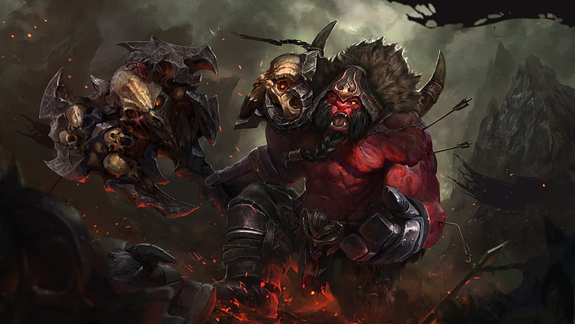

HTML/CSS WEBSITE MADE BY MARTIN (MIO) LUNA

HTML/CSS WEBSITE MADE BY MARTIN (MIO) LUNA
AXE

Mogul Khan the Axe is an Oglodi, and hes known for being big and strong, but kind of an idiot. The Oglodis are a kind of
people in the dotaverse distinguishable by their size, red skin, and orcish behavior. He spends his time searching for
adventure and challenge, alongside his bard, goodkind. She writes best-selling novels about their endeavors, as we can
see in the comic “the last castle”. But before we talk about his current activities - how did Axe become Axe?
Axe is commonly played as an initiator, as his potent disables can disrupt the enemy's formation and give his team
openings in fights. Axe's fighting style demands that he gets up close and very personal, as he can taunt enemies into
attacking him with Berserker's Call, preventing them from engaging his teammates and granting him a huge amount of bonus
armor. Once he has the enemy's attention, he can counter those who strike him with a sweeping Counter Helix that slashes
all enemies at melee range with pure damage. He also has a slow and damage-over-time nuke in Battle Hunger, which can
harass the enemy or force them to join in battle, while also slowing their movement speed and boosting his own. Finally,
he has the ability to unconditionally remove weakened enemies from the battlefield if they are under a certain threshold
with Culling Blade, while simultaneously boosting his allies' speed. A bloodthirsty and indomitable warrior, Axe's
presence on the battlefield is felt by friend and foe alike, dominating the attention of the enemy wherever he goes.